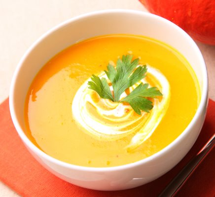

Sopa Crema de Calabaza

Preparacion:
- Lavar y pelar la calabaza, cortarla en trozos grandes.
- Colocar una olla grande con agua, el laurel, apio, sal y la calabaza.
- Dejarlo hervir durante 1 hora, procesar y servir.
Ingredientes
| Cant |
Productos |
| 50 cc. |
Calabaza |
| 1 un. |
Crema |
| c/c |
Laurel |
| 1 un. |
Sal |
| 1 lt. |
Caldo de Pollo |
A tener en cuenta
- Tiempo de elaboracion: 1:10 min.
- Cantidad de calorias: 30 por porcion
- Rinde 4 porciones
- Costo: $80